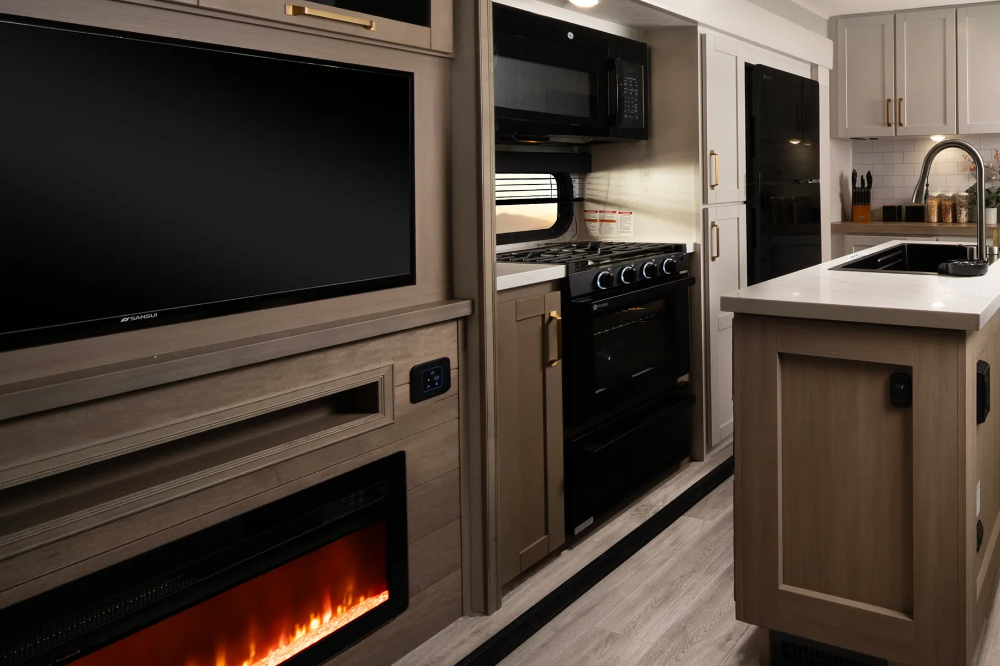
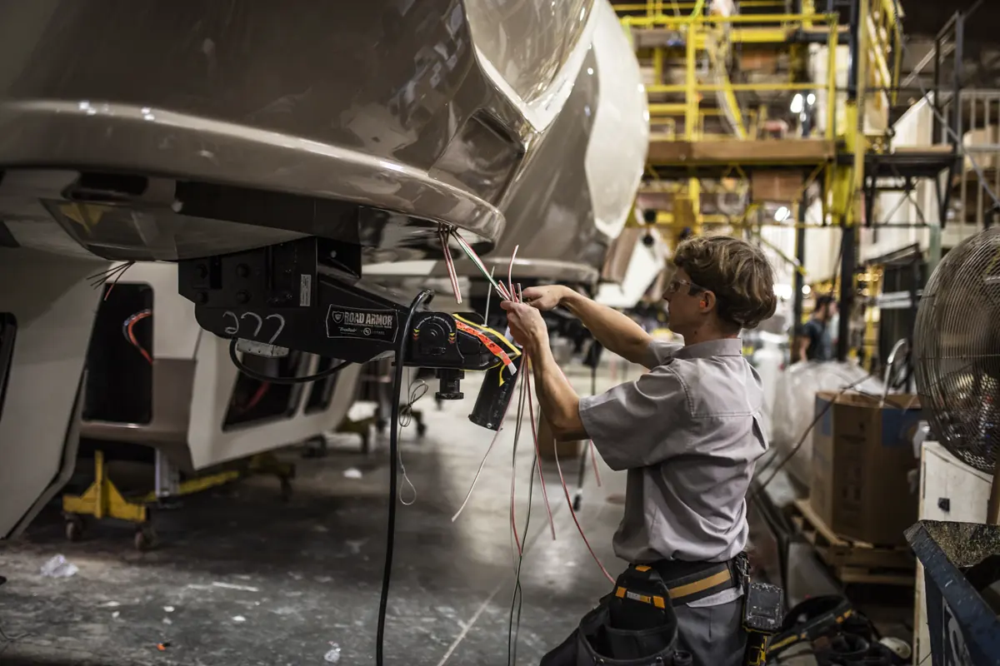
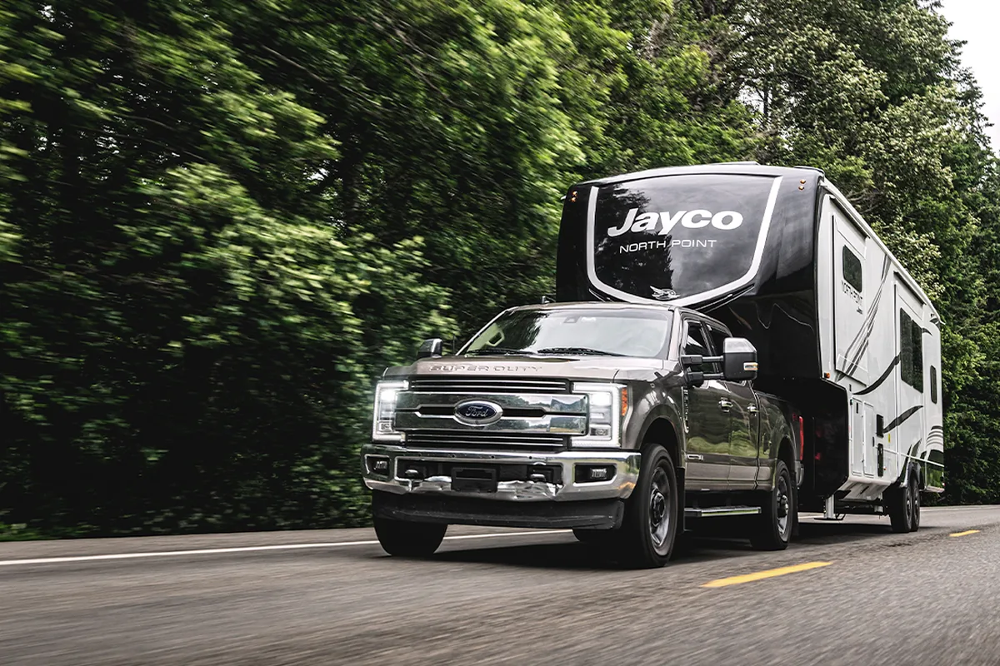

Nothing gets in without being argued for.
Three groups have to agree before a change reaches a coach: the dealers who sell them, the engineers who have to make it work, and the people who build it four hundred times a week.
Most product development stories are told from the design end, and they are the least interesting version. The one worth telling is what happens between somebody's good idea and a coach coming off the line with it in — because that is where almost every good idea stops.
At Jayco it takes a collaboration between three groups who want different things, and a testing sequence that can end a proposal over something as small as how a floor behaves in the cold.
Three groups,
one decision.
Each has a veto in practice, and each is answering a different question. That is the point of having three.
Dealers and sales
The nationwide dealer network, working with Jayco's own sales team. They are the ones hearing what people asked for and could not have, which features go unused, and which floorplan a family walked away from and why. Their question is: does anybody want this?
In-house engineers
Jayco describes it as the industry's largest engineering team, and it works on integration as much as invention — how a change lands in the models that exist now, and the ones already drawn for two years' time. Their question is: will it work, and what does it break?
Line operators
The people who will build it, every day, at production rate. A change that is fine once and awkward the four hundredth time is not a change, it is a defect waiting to be scheduled. Their question is: can we do this well, every time?

What it takes to change a floor.
Jayco's own worked example is a new linoleum. It sounds like a decision a designer makes on a Tuesday. It is five tests, and the last one is not about the material at all.
-
Temperature
Taken cold, and watched for cracking. A floor that is fine in Indiana in June and splits in Montana in February has not passed anything.
-
Adhesive
The material is one half of the question; what sticks it down is the other. The adhesive is applied and verified as its own step rather than assumed to work.
-
Durability
Wear, over the life a coach actually has — which includes grit walked in from campsites and furniture moved across it on slides.
-
Repair
The step most processes skip. Before it is approved, there has to be a known way to fix it — because a material a dealer cannot repair is a material that gets replaced whole, at somebody's cost.
-
Production sign-off
Production has to be confident it can build with it reliably. Until they are, it does not go in — which is the line operators' veto, exercised.
While RVers may take notice of inventive interiors like Modern Farmhouse, interior design is just one piece of the much larger process behind improving Jayco RVs each year.
Stacy Stewart, Senior Designer, Jayco
What has come
out of it.
Nine things Jayco claims as its own, from a crank lifter Lloyd Bontrager built in the 1960s to a ramp door you open with your voice. Dated the way Jayco dates them.
-
The founding years
The enclosed crank lifter system
Lloyd Bontrager's original: vertical telescoping posts with curved guides, fully enclosed so the mechanism could not corrode or be damaged. It is the thing the company was started on.
-
Early 1970s
Rubber torsion axle with independent suspension
The first camping trailer to combine the two. It rode better and towed easier, and it is the ancestor of everything on the handling packages today.
-
Early 1970s
Overhead cabinets
Storage above head height in a camping trailer, which now reads as obvious and was not.
-
Early 1970s
The Jay Cardinal, with a tandem axle
Opened out to the living space of a travel trailer while towing as something considerably smaller.
-
Late 1970s
The domed roof
Wilbur Bontrager's, and a structural idea rather than a styling one: the slope stops water pooling, and the curve is stiffer than the flat panel it replaced.
-
Mid-1990s
Vacuum-bonded lamination
144 tons of pressure on each wall, held for 16 minutes. It produced a lighter, more fuel-efficient coach, and it is the process behind Stronghold VBL™ walls today.
-
Early 2000s
Surround sound across the whole line
The first company to put the components in every product line rather than only the expensive ones — which is a positioning decision as much as a technical one.
-
Mid to late 2000s
Connected audio, as it arrived
iPod adapters, then Bluetooth, added as each became the thing people actually had in their pocket.
-
Recent
Automated ramp doors
On Seismic toy haulers, with app and voice control. A ramp door is heavy and is usually opened by somebody with their hands full.
The full history, decade by decade — including the parts that were not commercial victories — is on Our Story.

Safety & JaySMART
The lighting system, the handling packages, the roof tested to 4,500 pounds, and a belt at every seat.
See the Systems
Sustainability & Overlander
Solar specified with the coach and fitted on the line, plus EcoAdvantage™ on the manufacturing side.
See the PackagesAbout how they are developed.
Jayco describes the process as running on a model-year cadence, with all three groups signing off before anything goes into production. Even relatively common changes go through the full testing sequence — the linoleum example above is Jayco's own, and it is not an unusually thorough case.
The dealer network is the route Jayco itself names — dealers and the sales team are one of the three groups that feed the process, and what they pass on is what people asked for in a showroom. Find a Dealer is where that starts.
Jayco's own name for its sustainable manufacturing practices. Jayco publishes the name and not the detail behind it, so neither this page nor Sustainability & Overlander Packages describes what sits under it — a programme we cannot cite is not one we will summarise.
That is Jayco's own claim, stated on its R&D page, and it is repeated here as a claim rather than as a verified count — Jayco does not publish the number and neither does the comparison. The testing sequence above is the part of it you can actually check against a finished coach.
At the very end, and in a different building. Development decides what goes into a coach; 100% PDI checks that it actually did, on every unit, before it ships to a dealer.